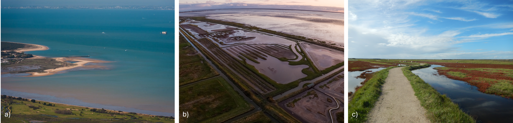
Utilisation de l’espace par le Courlis cendré dans le site fonctionnel de la réserve de Moëze-Oléron
1 Points clés
1.1 Contexte et objectifs
La Réserve Naturelle Nationale de Moëze-Oléron (6 800 ha, Charente-Maritime), gérée par la LPO depuis 1985, est un site clé pour les oiseaux d’eau migrateurs du littoral atlantique. Elle relie zones humides, estrans et marais conchylicoles, et accueille chaque année jusqu’à 100 000 oiseaux.
Depuis 2015, la LPO, en partenariat avec le CNRS et le Muséum national d’Histoire naturelle, suit par GPS plusieurs dizaines de Courlis cendrés (Numenius arquata) afin de comprendre comment cette espèce utilise l’espace dans et autour de la réserve. Ce limicole emblématique, classé « Vulnérable » en France et « Quasi menacé » à l’échelle mondiale, sert ici d’espèce parapluie pour orienter la gestion des zones côtières fréquentées par de nombreuses autres espèces d’oiseaux d’eau.
1.2 Principaux résultats
Utilisation de l’espace et domaines vitaux : Chaque individu exploite un domaine vital moyen d’environ 640 m². En moyenne, les courlis passent plus de la moitié de leur temps (52%) à l’intérieur de la réserve. Les femelles utilisent des territoires significativement plus vastes que les mâles, probablement en lien avec leur plus grande taille et leur bec plus long.
Reposoirs et zones d’alimentation : Les oiseaux alternent entre reposoirs (marée haute) et zones d’alimentation (marée basse). Les reposoirs et zones d’alimentation se situent à la fois à l’intérieur et en dehors de la réserve, notamment dans le bassin de Marennes et le marais de Brouage. Les zones d’alimentation principales sont concentrées sur les vasières côtières et les prés salés, alors que les reposoirs se situent souvent en zones plus abritées. Les courlis juvéniles parcourent des distances plus longues entre les sites de repos et d’alimentation, traduisant un comportement plus exploratoire ou une moindre efficacité.
Effets des marées et conditions météorologiques : Les marées hautes et les submersions limitent les zones disponibles, renforçant la fidélité des oiseaux à certains reposoirs connus. Les événements de vent fort n’affectent pas significativement les comportements de repos, mais peuvent modifier temporairement les zones d’alimentation.
Effets de la chasse à pied et chasse à la tonne : Les données suggèrent un impact potentiel de dérangement, notamment autour des zones non protégées. Bien qu’aucun effet direct n’ait été mesuré sur les déplacements à court terme, la superposition entre zones de chasse et zones d’alimentation clées montre un risque de perturbation élevé.
Zones critiques identifiées : Les analyses spatiales révèlent plusieurs zones critiques de repos et d’alimentation situées hors du périmètre actuel de la réserve, souvent à proximité immédiate de zones de chasse. Ces secteurs représentent des priorités de conservation et de gestion concertée.
1.3 Enseignements clés pour la gestion
La RNN de Moëze-Oléron joue un rôle central mais partiel : de nombreuses zones fonctionnelles importantes se trouvent à l’extérieur de ses limites.
La conservation du Courlis cendré et des autres limicoles dépend d’une gestion coordonnée à l’échelle du bassin des Pertuis charentais.
Il est nécessaire de mieux intégrer les activités humaines (chasse, pêche, tourisme) dans les stratégies de préservation, via : des zones tampons autour des reposoirs sensibles, un dialogue renforcé avec les usagers (chasseurs, ostréiculteurs, pêcheurs à pied), et le suivi à long terme des déplacements via GPS.
1.4 Perspectives et besoins identifiés
Élargir le suivi GPS à d’autres sites de capture pour limiter les biais et mieux représenter l’ensemble de la population.
Améliorer les données de pression de chasse et de fréquentation humaine (comptage de chasseurs, tirs, pêche à pied).
Analyser les effets cumulés du changement climatique, de la submersion marine et des usages littoraux.
Renforcer les partenariats territoriaux pour protéger les zones fonctionnelles au-delà de la réserve.
1.5 Partenaires et financement
Étude conduite par la LPO France et la RNN de Moëze-Oléron, en collaboration avec le CNRS (LIENSs) et le MNHN (CESCO). Projet financé par le Fonds Vert et la Région Nouvelle-Aquitaine (Fonds Européen de Développement Régional, FEDER) dans le cadre du programme « Adaptation des limicoles aux changements climatiques ».
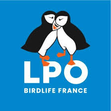
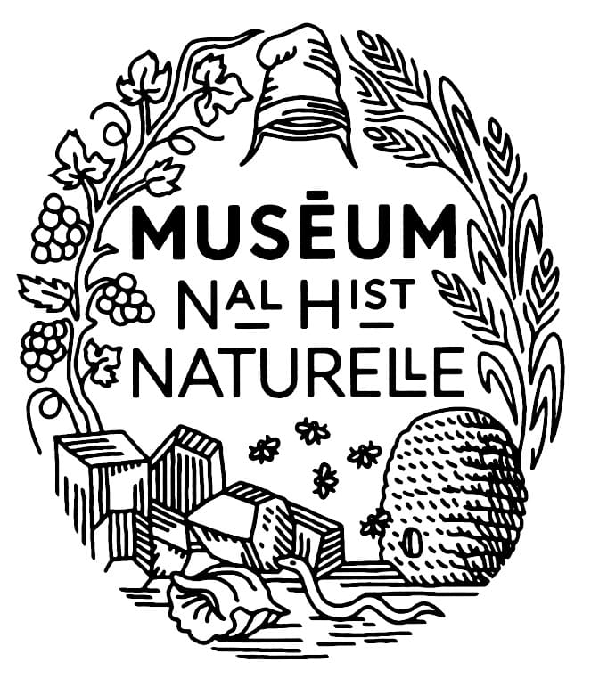
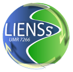
2 Contexte de l’étude
Créée en 1985, la Réserve Naturelle Nationale de Moëze-Oléron (RNNMO), située dans le département de la charente maritime, s’étend sur près de 6 800 hectares entre le continent et l’île d’Oléron (Figure 1). Gérée par la Ligue pour la Protection des Oiseaux (LPO-France), elle abrite chaque année jusqu’à 100 000 oiseaux d’eau, dont de nombreux limicoles migrateurs et hivernants.
Située au cœur du bassin fonctionnel des pertuis charentais, la réserve relie estrans, marais et zones conchylicoles, formant un maillon essentiel des grands couloirs migratoires atlantiques et contribuant à la conservation des oiseaux d’eau à l’échelle internationale (Figure 2).
.jpg)
Depuis 2015, la Ligue pour la Protection des Oiseaux (LPO-France), en collaboration avec les laboratoires LIttoral ENvironnement et Sociétés (LIENSs, UMR 7266, CNRS - Université de La Rochelle) et le Centre d’Écologie et des Sciences de la Conservation (CESCO, UMR 7204, CNRS - MNHN - Sorbonne Université), bague et équipe de GPS des Courlis cendrés au sein de la RNNMO (Figure 3).
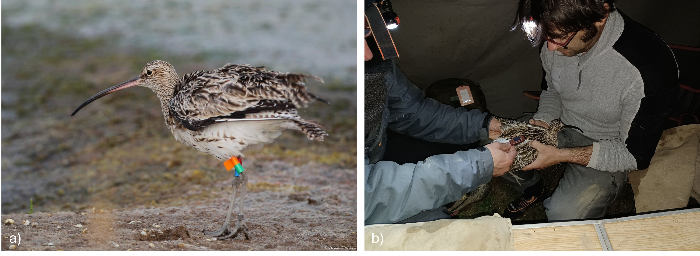
3 Objectifs scientifiques
L’objectif général de cette étude est de mieux comprendre l’utilisation de l’espace par le courlis cendré dans le site fonctionnel local de la RNNMO. Le courlis cendré est mis à contribution ici comme une espèce parapluie afin d’identifier les zones et les temporalités prioritaires à préserver pour l’accueil des limicoles dans le zone d’étude.
À partir de l’analyse des données issues de balises GPS posées sur plusieurs dizaines de courlis cendrés dans a RNNMO, leurs déplacements ont été analysés afin de dégager les principales zones utilisées par les oiseaux et leurs variations en fonction de changements environnementaux et pressions cinégétique. Ce travail s’inscrivant dans un contexte de fortes pressions anthropiques (chasse, pêche à pied, ostréiculture, tourisme, …) ainsi que d’un recul du trait de côte, entraînant une maritimisation progressive de la réserve naturelle.
4 Le courlis cendré
Morphologie : Le Courlis cendré (Numenius arquata, Figure 4) est le plus grand limicole d’Europe, de longtemps entre 55–65 cm pour une envergure entre 90–110 cm et un poids de 600 à 1200 g. Son plumage est brun-gris tacheté. Son long bec courbé vers le bas mesure jusqu’à 19 cm. L’espèce présente un dimorphisme sexuel relativement marqué, avec les femelles en moyenne plus grandes et avec un bec plus long que les mâles.
Comportement social : C’est une espèce discrète, au comportement prudent. Il est territorial en période de reproduction, et grégaire hors reproduction.
Régime alimentaire : Il mange principalement des vers de terre, des insectes, des mollusques et des crustacés ; et complète ponctuellement sont régime alimentaire par des graines et baies. Il s’alimente au sol ou par sondage dans la vase ou les prairies humides.
Habitats : Sa reproduction est faite avec un nid au sol, souvent dissimulé dans la végétation en prairies humides, en landes, en tourbières, en marais, ou zones agricoles extensives. Il utilise des vasières intertidales, des estuaires, des prés salés, des prairies humides ou des pâtures pour sont alimentation, et des vasières, des zones littorales, des lagunes, ou marais salants pour ses périodes de repos (Figure 1).
Saison de reproduction : Sa saison de reproduction s’étends d’avril à juillet. Les femelles pondent en général entre 3 et 4 œufs. L’incubation dure environ 28 jours, et les jeunes deviennent autonomes à l’âge de 5 à 6 semaines.
Migration : Les courlis cendrés est une migrateur partiel. Les populations du nord-est de l’Europe hivernent principalement en Europe occidentale et sur les côtes atlantiques africaines. En France, il y a une présence à l’année de courlis cenrdrésdans certaines régions littorales (ex. : baie de Somme, estuaire de la Loire), et une migration marquée en automne et au printemps.
Effectifs de population : La population mondiale est estimée à ~ 140 000 – 240 000 couples reproducteurs, avec ~ 97 000 – 167 000 couples en europe. La population française s’élève à ~ 2 200 à 2 800 couples nicheurs (principalement dans le nord-ouest, Centre-Val de Loire, Grand Est) et ~ 20 000 à 30 000 individus hivernants (surtout sur le littoral atlantique et dans le sud-est).
Tendance démographique et statuts de conservation : Le courlis cendré est en “déclin modéré” à “marqué” en Europe occidentale. Il connait un fort recul des effectifs nicheurs en France depuis les années 1980 (perte estimée à plus de 30 %). Il est classé “Near Threatened” (quasi menacé en français) à l’échelle mondiale par IUCN et inscrit à l’Annexe II de la Convention de Bonn (CMS). En Europe, il est classé à l’Annexe II de la Convention de Berne et l’Annexe II.2 de la Directive Oiseaux (espèce chassable sous conditions), avec un déclin confirmé dans plusieurs États membres. En France, il est considéré comme “Vulnérable” et est inscrit à l’arrêté ministériel du 26 juin 1987 fixant la liste des espèces de gibier dont la chasse est autorisée mais bénéficiant actuellement d’un moratoire de suspension de la chasse reconduit chaque année depuis XXXX.
5 La zone d’étude
La zone d’étude englobe le site fonctionnel local de la RNNMO, comprenant le bassin de Marennes et le marais de Brouage et la mer des Pertuis (Figure 5). L’aire d’étude s’étend sur une surface de 623.5 km² au Nord jusqu’à l’estuaire de la Charente, à l’Est jusqu’à la limite Est de la ville de Rochefort, au Sud jusqu’à l’estuaire de la Seudre, et à l’Ouest jusqu’à la facade Est de l’ile d’Oléron, englobant ainsi la zone fonctionnelle de la RNNMO. L’aire d’étude est divisée en trois zone A, B et C pour faciliter l’analyse spatiale fine. Les individus sont bagués et équipés de GPS au sein de la RNNMO au site de baguage au sud de la zone B (Figure 5).
6 Périodes de suivi des individus
Le jeu de données analysé est constitué de XX point GPS enregistré entre 2016 et 2025 pour XX individus. Les données comportent XX femelles, XX mâles, XX adultes et XX juvéniles. L’âge et le sexe n’a pas été identifié pour XX individus. Chaque individu a en moyenne XX point GPS enregistrés représentant des périodes de temps de 5 min (Figure 6).
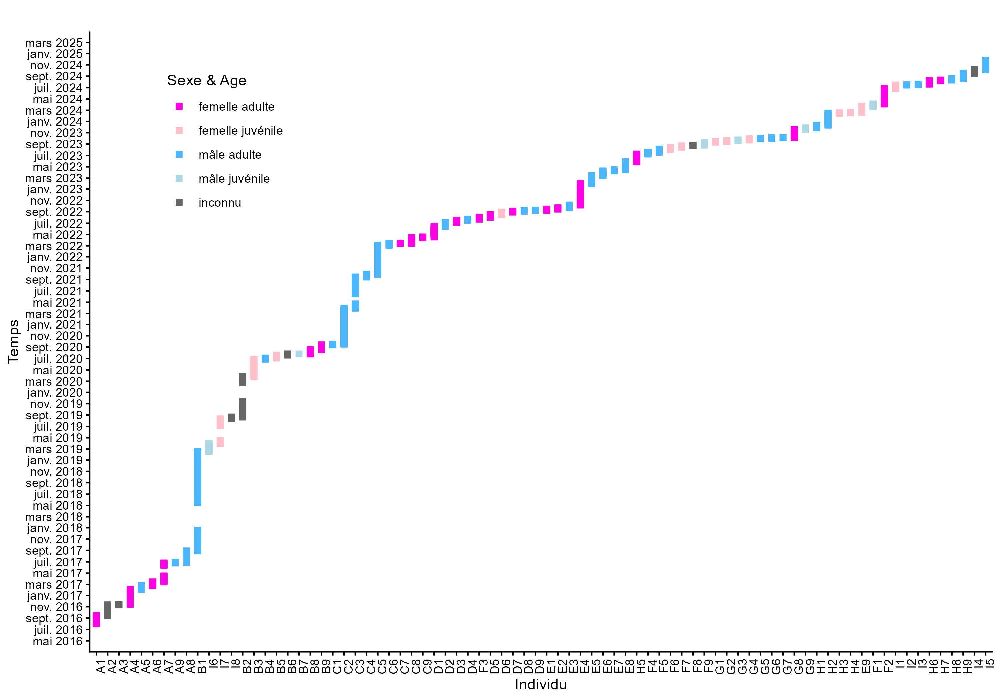
7 Domaines vitaux
Chaque courlis cendré a un domaine vital individuel, avec un noyau d’activité représentant la zone de fréquentation la plus intense (englobant 50 % des points GPS enregistrés pour l’individu, c’est-à-dire estimé au vertice à 50%, et nommée par la suite “domaine vital principal”), et un domaine vital plus large correspondant a ces autres espaces moins fréquement utilisés (englobant 95 % des points GPS, c’est-à-dire estimé au vertice à 95%, et nommée par la suite “domaine vital étendu” Figure 7, Figure 8, Figure 9, Figure 10).
Les individus ont des domaines vitaux d’une surface moyenne de 644 (± 389) m², avec 50% de leur activité dans une zone principale de 67 (± 33.43) m² (Figure 11).
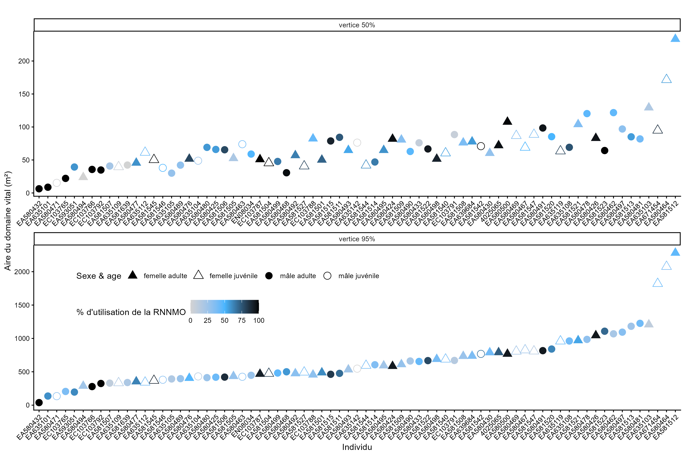
La surface des domaines vitaux (principaux comme étendus) des mâles est significativement plus petite que celles des domaines vitaux des femelles (mâle vs femelle : -0.25 ± 0.1, p-value = 0.01). La surface du domaine vital ne varie pas en fonction de l’âge.
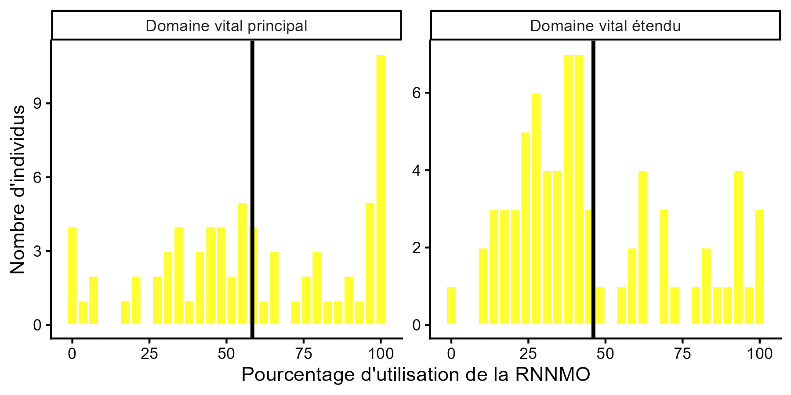
En moyenne, les courlis cendrés utilisent la RNNMO 52% de leur temps. Leurs déplacements au sein de leur domaine vital principal sont à 58% dans la RNNMO, et 46% de leurs déplacements dans leur domaine vital étendu sont dans la RNNMO (Figure 12).
8 Les reposoirs
A chaque marée haute, les courlis cendrés remontent hors des vasières et se regoupent dans des reposoirs appelés “reposoirs”.

Les reposoirsoirs sont découpées en deux zones, une zone au vertice à 50%, nommée par la suite “reposoirs principaux” ; et une zone au vertice à 95%, nommée par la suite “reposoirs secondaires”.
Reposoirs en zone A : reposoirs principaux en rose opaque, reposoirs secondaires en rose transparent ; limite de la RNNMO en vert ; site de baguage à l’épingle rouge.
8.1 Reposoirs en fonction de l’âge
8.2 Reposoirs en fonction du sexe
Les courlis cendrés femelles et mâles ne présentent pas de différence marquée quant à leur reposoirs.
8.3 Reposoirs en fonction du calendrier
Les reposoirs peuvent varier en fonction de la période de l’année et des saisons.
8.3.1 Reposoirs en fonction du mois de l’année
8.3.2 Reposoirs en fonction du jour et de la nuit
8.3.3 Reposoirs entre fonction de la hauteur d’eau
Les reposoirs peuvent varier en fonction de la hauteur d’eau lors des marées hautes (Figure 28, Figure 29, Figure 30).
Les dates détectées de submersion de la lagune sont : XXX
9 Les zones d’alimentation
A chaque marée base, les courlis cendrés partent à la recherche de nourriture.

Les zones d’alimentation sont découpées en deux zones, une zone au vertice à 50%, nommée par la suite “zone d’alimentation principales” ; et une zone au vertice à 95%, nommée par la suite “zone d’alimentation secondaires”.
9.1 Zones d’alimentation en fonction des caractéristiques biologique des individus
Les zones d’alimentation peuvent varier avec l’âge. Les courlis encore juvéniles étant moins expérimentés que les adultes, ils pourraient être assignés à des zones de recherche alimentaire moins favorables.
9.1.1 Zones d’alimentation en fonction de l’âge
9.1.2 Zones d’alimentation en fonction du sexe
Les zones d’alimentation varié en fonction des sexe des individus. Les mâles sont resteint à des zones d’eau moins profondes dû à leur bec en moyenne plus court que celui des femelles.
9.2 Zones d’alimentation en fonction du calendrier
9.2.1 Zones d’alimentation en fonction du mois de l’année
Les zones d’alimentation peuvent varier en fonction de la période de l’année et des saisons.
9.2.2 Zones d’alimentation en fonction du jour et de la nuit
10 Utilisation de l’espace lors d’évènements de vent extrêmes
Les évènements climatiques extrèmes sont en augmentation, en fréquence et en intensité, avec le changement climatiques (beniston2004). Les évènements de vents forts sont suspectés d’être préjudiciable pour les courlis cendrés et on s’attend à ce que leur utilisation de l’espace soit modifié lors des tempêtes.
L’utilisation de l’espace pour les comportements de repos et d’alimentation pendant les jours avec évènements extrêmes sont comparés aux jours 7 jours avant les évènements extrêmes et considéré comme jours de référence. Les évènements extrèmes sont ici distingué en trois catégories : i) les évènements de vent fort (vitesse de vent supérieur aux 95 % des enregistrements), ii) les évènements de vent de Nord-Ouest (avec une orientation du vent entre 270 et 360 degrés) et iii) la combinaison des deux
Les vents de Nord-Ouest semblent ne pas avoir d’effet sur les comportements de repos ni d’alimentation, tout comme les vents forts sur les comportements de repos.
10.1 Reposoirs en fonction d’évènements venteux extrèmes
10.1.1 Evènements de vent fort
10.1.2 Evènements de vent de Nord-Ouest
10.1.3 Evènements de vent fort de Nord-Ouest
10.2 Zones d’alimentation en fonction d’évènements venteux extrèmes
10.2.1 Evènements de vent fort
10.2.2 Evènements de vent de Nord-Ouest
10.2.3 Evènements de vent fort de Nord-Ouest
11 Distance entre les reposoirs et les zones d’alimentation
Il y a une corrélation significative (p-value : 6.93e-16 ***) entre la distance individuelle moyenne alimentation-repos et sa variance : les individus qui font le plus loin en moyenne sont aussi ceux qui varient le plus dans la distance parcours à chaque cycle de marée.
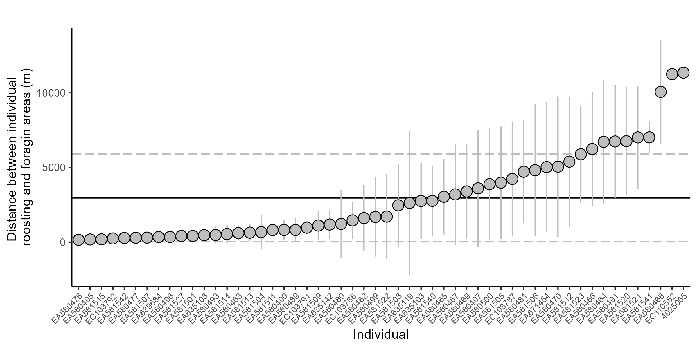
Les distances à chaque cycle de marée des paires de centroïds individuels entre les zones d’alimentation et de repos ont été comparées entre les mâles et les femelles, les adultes et les juvéniles, et pendant ou hors péridoe de chasse (Figure 66).
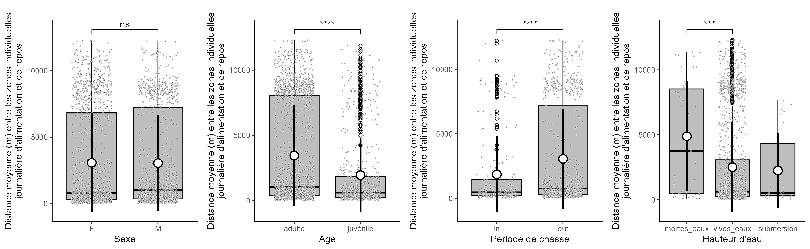
Les juvéniles parcourent significativement plus de distance entre leurs zones d’alimentation et de repos que les adultes. Il n’y a pas de différence significative entre les mâles et les femelles. La distance entre les zones d’alimentation et de repos d’allonge lors de la période de chasse (et plus de variabilité ?).
12 Fidélité aux reposoirs
La fidélité en reposoirs est estimée par deux mesures complémentaires pour chaque individu :
| Mesure | Définition | Interprétation |
|---|---|---|
| Equitabilité | Diversité d’utilisation des reposoirs | Equitabilité proche de 1 : utilisation équilibrée de plusieurs reposoirs différents (fidélité faible) ; équitabilité proche de 0 : comportements de repos concentrés sur peu de reposoirs différents (fidélité forte) |
| Taux de variation | Fréquence de mouvement entre reposoirs, mesure l’instabilité temporelle dans les choix de reposoirs | Plus la valeur est élevée, plus les changements de reposoirs sont fréquements (fidélité faible) |
Ces mesures de variabilité vs fidélité en reposoirs sont calculé pour les reposoirs principaux et les reposoirs secondaires. Plusieurs modèles linéaires mixtes (effet aléatoire individu) généralisé (Gaussien, Gamma ou transformation log) avec les effets fixes ‘âge’, ‘sexe’ et ‘intensité de marée’ et leur interaction deux à deux ont été comparés. Uniquement les résultats des meilleurs modèles sélectionnés par AIC sont présentés.
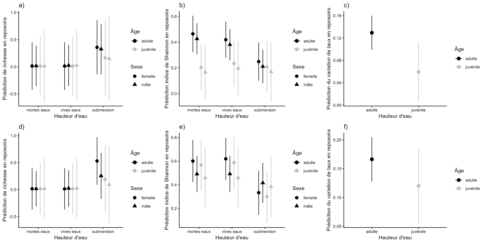
L’équitabilité en reposoirs principaux est significativement plus faible lors des submersions (coef : -0.34 ± 0.05, p-value < 1.10^6) en comparaison aux marées de mortes eaux. Elle est aussi significativement plus faible chez les juvéniles en comparaison aux adultes (coef : 0.30 ± 0.09, p-value : 0.002), mais cet différence diminue lors des marées de vives eaux (coef : 0.18 ± 0.06, p-value : 0.003) et des submersions (coef : 0.31 ± 0.08, p-value : 0.0003). Enfin, l’équitabilité en reposoirs semble plus fortes chez les mâles lors des marées de vives eaux et significativement plus forte lors des submersions (coef : 0.29 ± 0.07, p-value : 0.00005) en comparaison aux femelles (Figure 67 a).
Le taux de variation en reposoirs principaux est significativement plus faible chez les juvéniles en comparaison des adultes (coef : -0.07 ± 0.031, p-value = 0.03). Autrement dit, les juvéniles changent moins souvent de reposoirs principaux que les adultes (Figure 67 b).
Autrement dit, les courlis cendréses pourraient être plus fidéles à leurs reposoirs principaux lorsque la marée provoque de fortes montées des eaux (marées de vives eaux et submersions) car leur environnement connu est restreint. Les juvéniles sont plus fidèle que les adultes à leur reposoirs et changent moins souvent de reposoirs principaux, ce qui pourraient refléter leur caractère moins explorateur que les adultes en moyenne. Néanmoins, les juvéniles semblent se disperser plus que les adultes lorsque la marée provoque de fortes montées des eaux (marées de vives eaux et submersions). Les mâles sont moins fidèles à leurs reposoirs que les femelles lorsque la marée provoque de fortes montées des eaux (marées de vives eaux et submersions).
Le taux de variation et l’équitabilité en reposoirs secondaires ne varient ni en fonction de l’âge, du sexe, ou de l’intensité des marées.
13 Connectivité entre les reposoirs
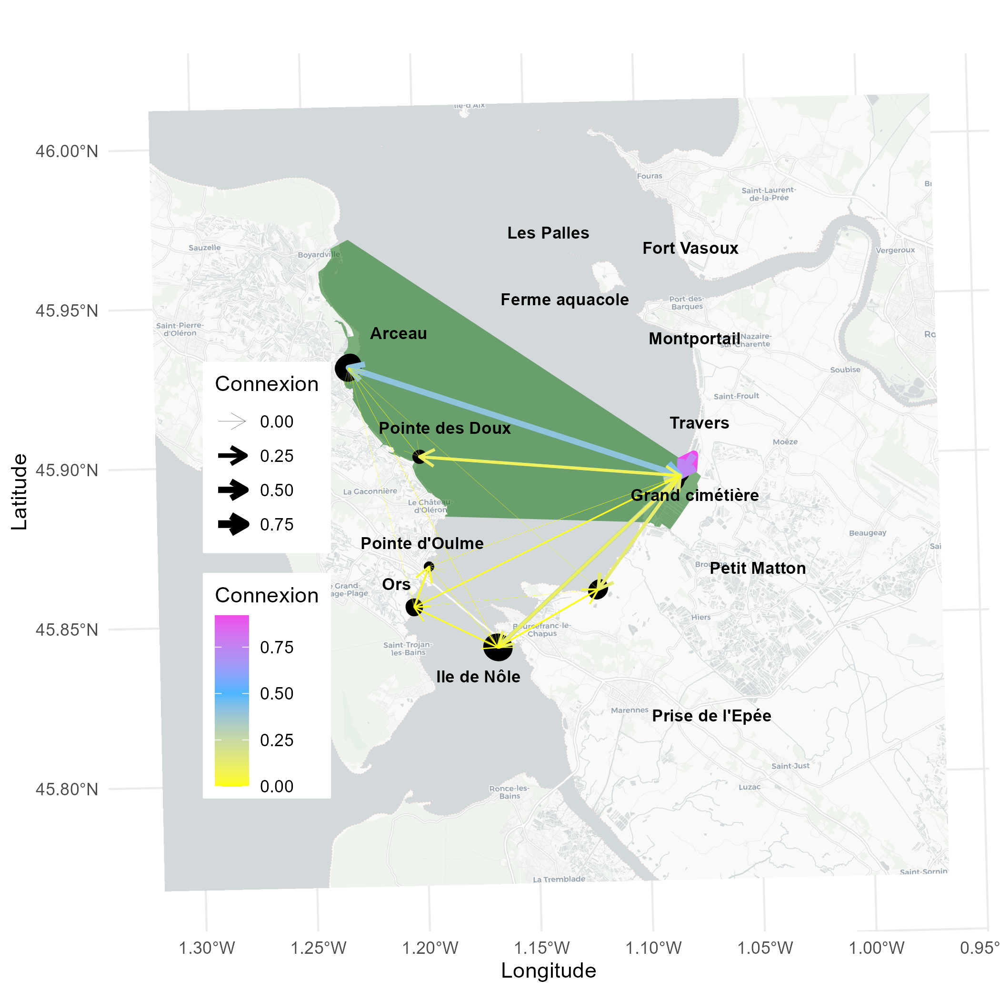
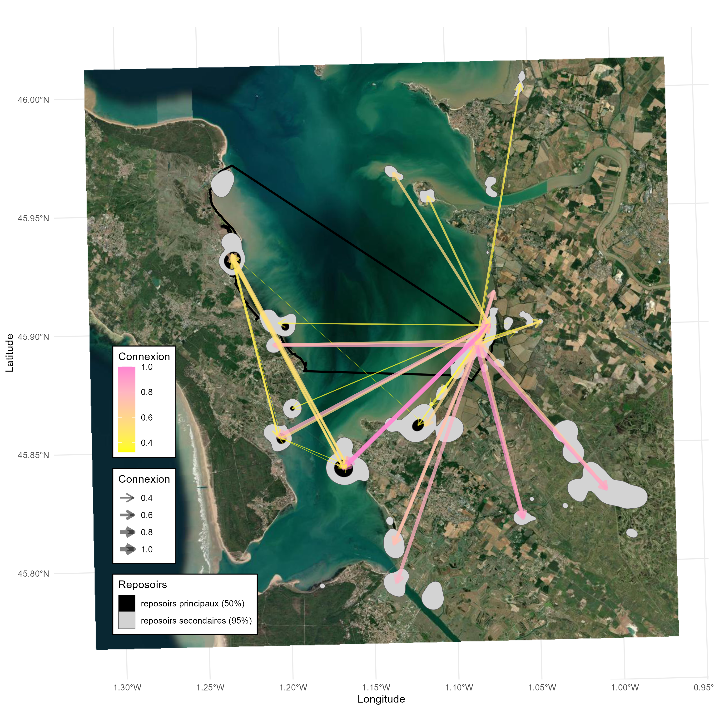
Les reposoirs sont fortement connectés entre deux grâce à une forte dynamiques spatio-temporelles des coulis centdré dans l’ensemble de la zones d’étude.
Les reposoirs principaux sont bien reliés entre eux, XXX
14 Evitement des chasseurs et des zones de chasses
14.1 Chasse à pied
La chasse à pied est autorisée sur le Domaine Public Maritime (DPM) aux alentours de la RNNMO. Il est attendu que la présence de chasseurs et le bruit des tirs dérangent les courlis cendrés et que leur comportements de repos et d’alimentation en soient perturbés.
Dates d’ouverture et de fermeture de la chasse sur le DPM :
Afin de limiter les effets de variation saisonnière sur l’utilisation de l’espace, le jeu de données est restreint autour de la fermeture de la chasse : 15 dernier jour de la période de chasse (période de chasse), 15 premier jour après la fermeture de la chasse (hors période de chasse).
Les effets de la présence, ou non, de chasseur sur site, et du nombre de chasseur présents ont également été testé, mais aucun effet n’a pu être détecté sur l’utilisation de l’espace pour le repos et l’alimentation.
14.2 Chasse à la tonne

La chasse à la tonne, est une méthode de chasse au gibier d’eau pratiquée depuis une installation fixe et semi-enterrée appelée “tonne”. Celle-ci est aménagée à proximité d’un plan d’eau artificiel (mare de tonne) dans le but d’attirer (appelants vivants ou artificiels souvent utilisés) et de tirer les oiseaux migrateurs (principalement les anatidés).
En charente-maritime, la période de chasse s’ouverture généralement fin aout, jusqu’à la fin février. Le tir est autorisé de nuit et jusqu’à 1h après le levé du soeil et 1h avant le coucher du soleil du le domaine public maritime. Le tir est interdit de 9h00 à 19h00 sur les territoires situés hors du domaine public maritime et fluvial. La tonne doit être déclarée auprès de la préfecture. Une distance minimale de 300 mètres est imposée entre deux tonnes.
Il est attendu que les tonnes de chasse constitues un dérangement non négligeable pour les oiseaux d’eaux, même lorsqu’il ne sont pas chassé, comme c’est le cas pour le Courlis cendré.
15 Zones critiques
Les principales reposoirs et d’alimentation estimées précédemment permettent de mettre en évidence des zones d’importance majeure pour les courlis cendrés dans le bassin fonctionnel étudié, mais pourtant en dehors des limites de protection de la RNNMO. Les emplacements des tonnes de chasses sont superposés à ces zones, mettant en evidence les zones de dérangement et de risque majeur pour les oiseaux.
16 Pour aller plus loin
Ce travail est une première étape dans l’étude de l’utilisation de l’espace par le courlis cendré dans et aux alentours de la RNNMO, et plusieurs compléments pertinents et marges d’amélioration peuvent être dégagés à ce stade.
16.1 Un fort tropisme vers le site de baguage
Les contraintes techniques liées à l’écologie du courlis cendré et aux autorisations de baguage ont restreint la zone de capture des oiseaux à équiper sur la plage du grand travers (le long de la côte au sein de la réserve de Moëze-Oléron). Les oiseaux étudiés ici ont donc un tropisme marqué vers cette zone, représentant un biais non négligeable dans les analyses spatiales. Il serait particulièrement intéressant de poursuivre ce suivi en équipant des oiseaux sur d’autres sites autour de la réserve pour obtenir une vue plus généralisable à l’ensemble de la population de Courlis dans la région.
16.2 Manque de données de pression de chasse
Les effets de la chasse à pied et de la chasse à la tonnes ont été partiellement évalués dans cette étude. Néanmoins, la pression de chasse n’a pas pu être incluse dans les analyses par manque de données. Des donnes spatialisées tout au long des saisons de chasse (sur le nombre de chasseurs présents, la durée des sessions de chasse, la quantité de tirs effectués et/ou les quantités de prélèvement) seraient des ajouts cruciaux pour évaluer plus en détails les impacts de la chasse sur les comportements de déplacements du coulis cendré.
16.3 Quels sont les effets de la pêche à pied sur les comprtements de déplacement du courlis cendré ?
La zone d’étude est un lieu de pêche à pied non professionnelle particulièrement prisé. Le courlis cendré pourrait être dérangé par la présence de pêcheurs à pied pour sa recherche de nourriture comme pour ses déplacements entre estran et reposoirs. L’étude des effets de la pression de pêche à pied serait un ajout pertinent pour étendre notre compréhension de l’utilisation de l’espace par le courlis cendré à un ensemble plus large des activités anthropiques ayant lieu dans la région.
17 Matériels et Méthodes
17.1 Nettoyage des données GPS
Le nettoyage des données issues des balises GPS a principalement été effectué à l’aide du package R adehabitat Calenge (2006).
En résumé, les points utilisés pour déterminer les comportements d’alimentation et de repos sont stationnaire (vitesse inférieure ou égale à 0.5 km/h). Pour que chaque individu ait le même poids dans les analyses, un point toutes les 5 min ont été estimé pour chaque individu. Uniquement les points situés dans la zone d’étude ont été utilisés. Le temps entre chaque point de localisation sauvegardé par individu pouvant varier et provoquer des périodes de carences de données plus ou moins longues, les périodes où la balise GPS de l’oiseau a enregistré plus d’un point par période de 5 min ont été analysés (éviter d’analyser des positions GPS trop peu précises et de résolutions temporelles hétérogènes). Une limite basse de 100 points estimés par individus sur une période supérieure à 28 jours (de deux cycles lunaires) a été appliquée pour maintenir une très haute qualité de suivi des individus pour les analyses.
17.2 Résumé des méthodes utilisées pour les analyses
Le détail des méthodes est disponible dans le document Readme du projet.
Assignation des comportements
Chaque point GPS enregistré est associé à un comportement de repos (voir section “Les principaux reposoirs” ici), de recherche alimentaire (voir section “Les principales zones d’alimentation” ici) ou autre.
Comportements de repos : Un point GPS est considéré comme correspondant à du repos si : i) vitesse de déplacement inférieure ou égale à 0.5 Km/h (estimé par partir de la fonction speedfilter du package “adehabitatHR”), ii) entre 2h avant et 2h après une marée haute, iii) au-dessus du plus bas niveau d’eau de marée base (au-dessus du Lowest Astronomical Tide en anglais) et iv) en dehors de la zone intertidal (déterminée par Litto3D data).
Comportement de recherche alimentaire : Un point GPS est considéré comme correspondant à de la recherche alimentaire si : i) vitesse de déplacement inférieure ou égale à 0.5 Km/h (estimé par partir de la fonction speedfilter du package “adehabitatHR”), et ii) entre 2h avant et 2h après une marée basse.
Identification de l’âge des individus
Voir section “Reposoirs en fonction de l’âge” ici et section “zones d’alimentation en fonction de l’âge” ici.
Le courlis cendré est considéré comme juvénile de sa sortie du nid au 1er septembre de l’année suivant leur éclosion. Au-delà de cette période, ils arborent leur plumage mature et sont considéré comme adulte. L’âge des individus est déterminé au baguage grâce à leur plumage. Les individus juvéniles lors du baguage et de la pose du GPS deviennent adultes après le 1er septembre de l’année suivante.
Identification du sexe des individus
Voir section “Reposoirs en fonction du sexe” ici et section “zones d’alimentation en fonction du sexe” ici.
Le sexe des individus est déterminé au baguage par morphométrie, les femelles étant plus grandes que les mâles.
Classification des hauteurs d’eau
Voir section “reposoirs en fonction de la hauteur d’eau” ici.
Le marégraphe utilisé pour obtenir les hauteurs d’eau (en m) est celui de l’ile d’Aix en priorité. Lorsque les données été manquante pour ce marégraphe, les hauteurs d’eau ont été prédites via une corrélation avec la cotinière et la rochelle. La variable choisie pour la hauteur d’eau est la variable “validé temps différé” en priorité, puis “brute temps différé”, puis “brute haute fréquence”. Les données de hauteurs d’eau ont été téléchargées via le site du SHOM. La hauteur d’eau est moyennée pour chaque période du grain temporelle choisie (5 min).
Basée sur l’expertise de terrain, les marées hautes ont été classées en fonction de la hauteur mesurée ou prédites. La marée est classifiée de marée de mortes eaux si la hauteur d’eau est inférieure à 4.8m, de marée de vives eaux entre 4.8m et 6.4m. Au-delà de 6.4m de hauteur d’eau, la marée provoque une submersion de la lagune.
Evènement climatique extrêmes
Voir section “Utilisation de l’espace lors d’évènements de vent extrêmes” ici“.
Les évènements climatiques extrêmes (ECE) sont définis comme les évènements d’intensité supérieure au quartile 95 % des distributions du paramètres météorologiques sur la période 2015-2024. Trois variables ECE ont été calculé à partir de la vitesse et l’orientation moyenne journalière du vent : i) les évènements de vent fort : 5% des vitesses de vent les plus fortes, ii) les évènements de vent de Nord-Ouest : orientation du vent entre 270 et 360 degrés, et iii) les évènements de vent fort de Nord-Ouest : 5% des vitesses de vent les plus fortes et d’orientation entre 270 et 360 degrés. Un ECE est un jour où l’une de ces 3 variables a été détectées. L’utilisation de l’espace pour les comportements de repos et d’alimentation pendant les jours avec ECE détectés sont comparés aux jours j-7 avant les évènements extrêmes et considéré comme jour de référence.
Les données météorologiques utilisées sont issues du site météostat pour la station météorologique de La Rochelle.
Distance entre les reposoirs et d’alimentations
Voir section “Distance entre les reposoirs et les zones d’alimentation” ici“.
La distance entre la zones d’alimentation et de repos a été estimé comme la distance entre les paires de centres géographiques individuels des zones d’alimentation et de repos à chaque cycle de marée.
Distribution d’utilisation de l’espace
Voir sections “Les principaux reposoirs” ici et “Les principales zones d’alimentation” ici.
Méthodes des kernels : L’ensemble des analyses spatiales sont basées sur des estimations de fonction de “distribution d’utilisation” de l’espace (Utilization Distribution, ou “UD” en anglais) qui décrivent la probabilité de présence d’un individu (ou d’un groupe d’individu) dans l’espace en fonction des points GPS qui lui ont été associés Worton (1989). Les distributions d’utilisation permettent donc d’estimer les zones les plus fréquemment utilisées par un animal. Elles ont été effectuées par la méthode dite du noyau (kernel en anglais) et avec les fonctions kernelUD et getverticeshr du package “adehabitatHR” Calenge (2006).
Paramètre de lissage (h) : L’estimation par noyau repose sur un paramètre de lissage (bandwidth, en anglais, nommé h), ici calculé selon la règle de Silverman adapté à chaque sous jeu de données pour chaque analyse, ajustée par un facteur de 1/2 pour permettre des analyses à grain fin (voir légende de chaque carte pour la valeur de h utilisée).
Echantillonnage aléatoire : Afin de garantir une représentativité (quasi)égale à chaque individu étudié malgré l’hétérogénéïté dans les quantités de point GPS enregistrés pour chacun, un échantillonnage aléatoire des points a été effectué à chaque analyse. Pour chaque individu et catégorie de variables analysées (comportement, zone, sexe, âge, etc…), 1000 points sont échantillonnés aléatoirement sans remise. La probabilité d’échantillonnage est fonction du temps entre chaque point, plus un point représente une période de temps peu enregistré, plus il aura de probabilité d’être échantillonné. Lorsqu’un individu présente moins de 1000 point pour une combinaison de variable données, tous les disponibles pour cette combinaison sont sélectionnés.
Sous jeu de données utilisé : Suivant les analyses, le jeu de données utilisé pour estimer les distributions d’utilisation de l’espace est différent et restreint à la zone A, B et C, au comportement ciblé (repos ou alimentation), et/ou à la (ou les) variable(s) d’intérêt(s) sans valeur inconnues (c’est-à-dire sans NA).
Grain spatial : Les analyses spatiales ont été effectués avec un grain spatial fin en grille de 10 m x 10 m.
Domaines vitaux
Voir section “Domaines vitaux” ici.
Les domaines vitaux (home range en anglais) ont été estimés par les mêmes méthodes de distributions spatial d’utilisation et de kernels comme précédemment, mais pour chaque individu séparément sur l’ensemble des points GPS, tous comportements confondus.
Deux enveloppes de domaine vital sont calculées pour chaque individu : i) le domaine vital étendu qui correspond à l’enveloppe englobant 95 % de la surface d’utilisation, ii) le noyau d’activité correspondant aux 50 % de surface d’utilisation, représente les zones de fréquentation la plus intense.
17.3 Données et codes
Toutes les analyses, graphiques et cartes ont été réalisés avec le logiciel R version 4.4.2.
Les données utilisées sont disponibles ici : XXX
L’ensemble des codes produits sont disponibles ici XXX : Github
18 Bibliographie
- Beniston, M., & Stephenson, D. B. (2004). Extreme climatic events and their evolution under changing climatic conditions. Global and planetary change, 44(1-4), 1-9.
- Calenge, C. (2006) The package “adehabitat” for the R software: a tool for the analysis of space and habitat use by animals. Ecol. Model. 197 (3), 516–519.
- Worton, B.J. (1989). Kernel methods for estimating the utilization distribution in home-range studies. Ecology 70, 164–168.
19 Auteur.ices, affiliations et contributions
Cette étude a nécessité la participation d’une moyenne de XXX personnes sur le terrain durant environ XXX nuits par an depuis 2016, anisi qu’une personne à temps plein (35h/semaine) pendant 6 mois pour l’analyse des données et la redaction de ce rapport.
Travail de terrain, capture et baguage des oiseaux : Pierre Rousseau (RNN Moëze-Oléron), Loïc Jomat (RNN Moëze-Oléron), Adrien Chaigne (RNN Moëze-Oléron), Pierrick Bocher (RNN Moëze-Oléron), Frédéric Jiguet (RNN Moëze-Oléron), et beaucoup d’autre personnes !
Analyses statistiques et spatiales : Suzanne Bonamour (LPO France), Gwenael Quaintenne (LPO France)
Rédaction : Suzanne Bonamour (LPO France)
Recherche de financements et partenaires : Adrien Chaigne (RNN Moëze-Oléron)
Comité scientifique : Pierrick Bocher (Univ. La Rochelle), Frédéric Jiguet (MNHN, CESCO, Paris)
Pour toutes questions, contacter Adrien Chaigne adrien.chaigne@lpo.fr ou Suzanne Bonamour suzanne.bonamour@lpo.fr.